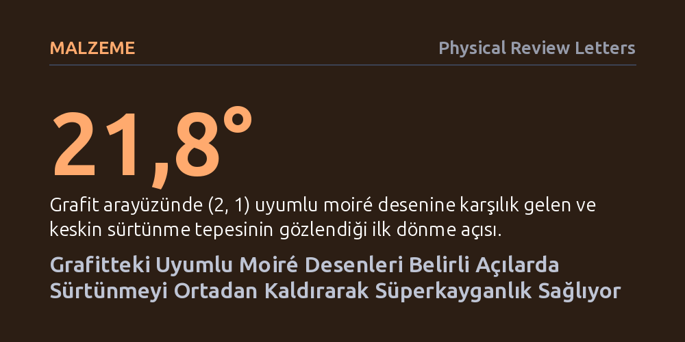

MALZEME · Physical Review Letters · 2026-10-15
Araştırmacılar, grafit katmanları arasındaki uyumlu moiré desenlerinin sürtünme özelliklerini deneysel olarak inceledi. Katmanların 21,8° ve 38,2° açılarında sürtünmenin yüke bağlı kalmaksızın neredeyse tamamen kaybolduğu ve yapısal süperkayganlığın ortaya çıktığı ilk kez doğrudan gözlemlendi.
Bu bulgu, nano ölçekli mekanik sistemlerde sürtünme ve aşınmanın, atomik katmanların belirli açılarda döndürülmesiyle neredeyse tamamen engellenebileceğini gösteriyor.

Mekanik sistemlerin en büyük enerji kaybı kaynağı olan sürtünme, mikro ve nano ölçekli cihazlarda çok daha kritik bir sorun haline gelir. İki katı yüzey temas ettiğinde, atomik pürüzler birbirine takılarak harekete direnç gösterir. Ancak iki boyutlu kristal tabakalar söz konusu olduğunda, 'yapısal süperkayganlık' adı verilen olağanüstü bir durum ortaya çıkabilir. Bu durumda atomik örgüler birbiriyle tam olarak örtüşmediğinde, temas noktalarındaki kuvvetler birbirini dengeler ve sürtünme neredeyse sıfıra iner.
Buna karşılık, katmanlar birbiriyle periyodik olarak tam örtüştüğünde (uyumlu durum), atomlar potansiyel kuyularına kilitlenir ve sürtünme belirgin şekilde artar. İki katmanın hafif bir açıyla üst üste binmesiyle oluşan moiré desenlerinin bu sürtünme denkleminde nasıl bir rol oynadığı, özellikle hem periyodik uyum gösterip hem de açısal desen oluşturan özel konfigürasyonlarda deneysel olarak bilinmiyordu. Bu çalışma, tam da bu keşfedilmemiş alanın üzerine gidiyor.
Araştırmacılar, grafit katmanlarını birbirine göre farklı açılarda hassas bir şekilde konumlandırarak arayüzdeki sürtünme kuvvetlerini doğrudan ölçtü. İki boyutlu homojen arayüzlerin açısal sürtünme haritasını çıkarmak amacıyla, farklı dönme açılarında katmanların sürtünme tepkisi sistematik olarak kaydedildi.
Deneysel ölçümlerin altında yatan mekanizmayı çözmek için kuramsal analizler ve atomistik simülasyonlar devreye sokuldu. Farklı uyumlu moiré desenlerinde katmanların birbiri üzerinde kayarken karşılaştığı enerji engelleri (kayma bariyerleri) ve katmanlar arasındaki mesafenin kararlılığı atom düzeyinde hesaplandı.
Deneyler, grafit katmanları birbirine göre 21,8° ve 38,2° açılara getirildiğinde çok belirgin ve keskin sürtünme tepeleri ortaya çıktığını gösterdi. Bu açılar, literatürde (2, 1) olarak adlandırılan özel bir uyumlu moiré desenine karşılık geliyordu. Dikkat çekici bir şekilde, diğer yüksek dereceli moiré desenlerinde ölçülebilir hiçbir sürtünme sinyali kaydedilmedi.
Daha da şaşırtıcı olan bulgu, bu sürtünme tepelerinin üzerlerine binen yüke neredeyse hiç bağımlılık göstermemesiydi. Normalde uyumlu kristallerde yük arttıkça sürtünme artarken, burada sürtünmesiz (süperkaygan) duruma benzer bir davranış sergilendi. Simülasyonlar, artan desen indisleriyle birlikte kayma bariyerlerinin üstel olarak azaldığını ve geride yalnızca çok küçük bir artık direnç kaldığını ortaya koydu. Katmanlar arasındaki mesafe son derece kararlı kalarak sistemin adeta bir "van der Waals levitasyonu" durumuna yaklaştığı belirlendi.
Elde edilen sonuçlar, iki boyutlu malzemelerin açısal sürtünme haritasındaki önemli bir boşluğu tamamlıyor. Önceden süperkayganlığın yalnızca tamamen uyumsuz ve rastgele açılarda mümkün olduğu düşünülürken, bu çalışma yüksek dereceli uyumlu yapıların da pratik olarak süperkayganlık sağlayabildiğini kanıtlıyor.
Bu anlayış, geleceğin aşınmasız nano-elektromekanik sistemleri (NEMS) ve minyatür hareketli parçaları için yeni tasarım kapıları aralıyor. Malzemelerin sadece türünü değil, aralarındaki temas açısını da kontrol ederek neredeyse sıfır sürtünmeyle çalışan ve aşınmayan mekanik arayüzler geliştirmek mümkün olabilir.